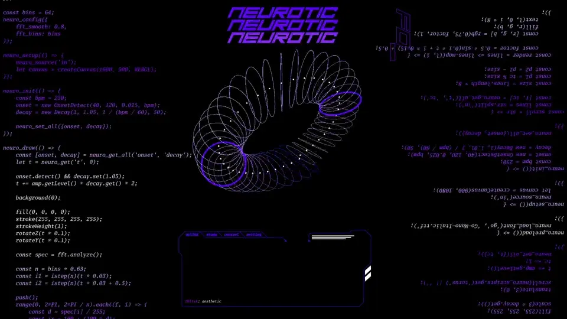
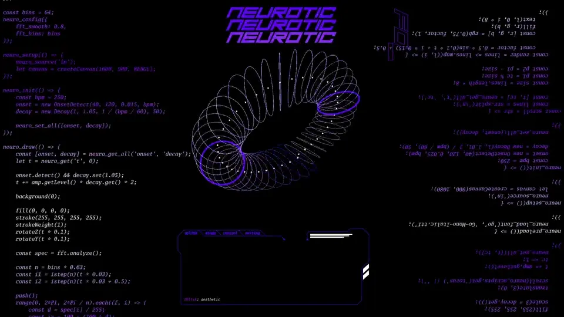
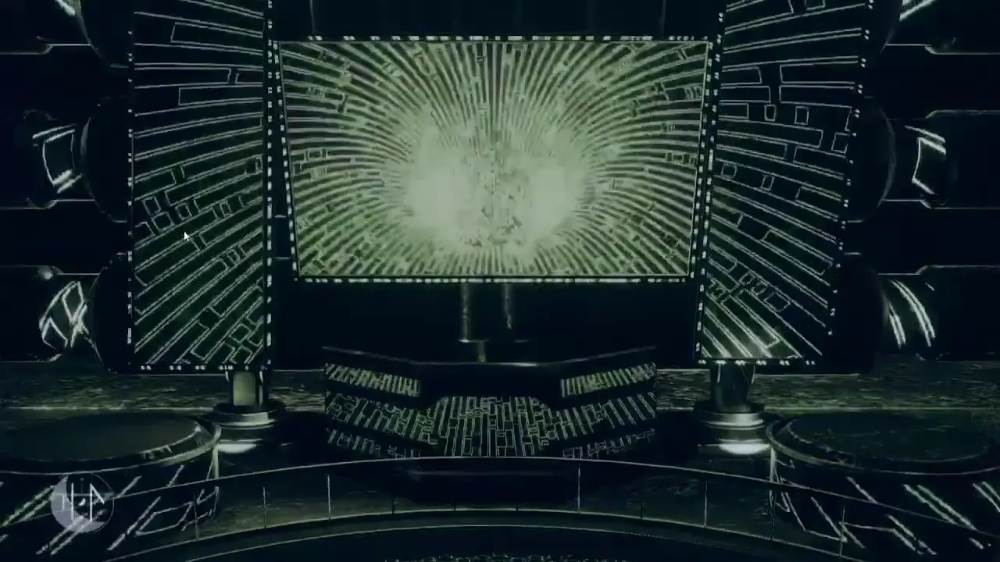
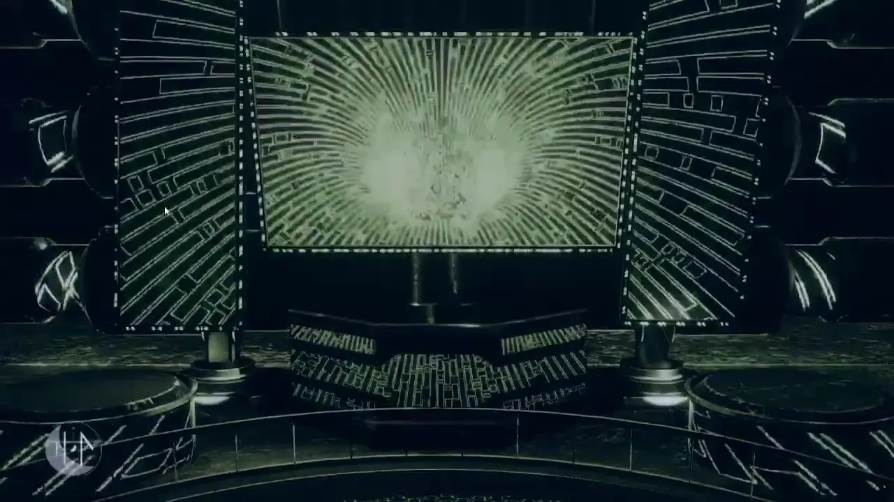
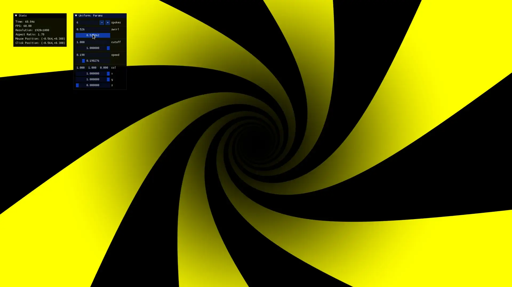
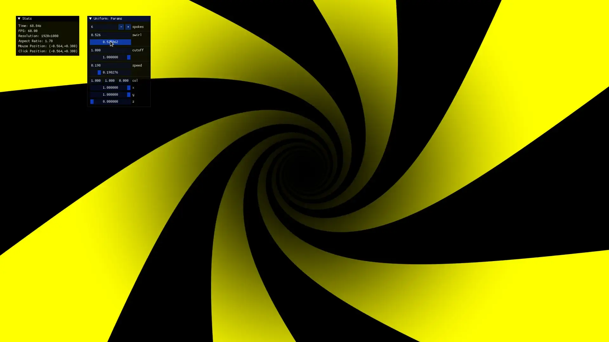
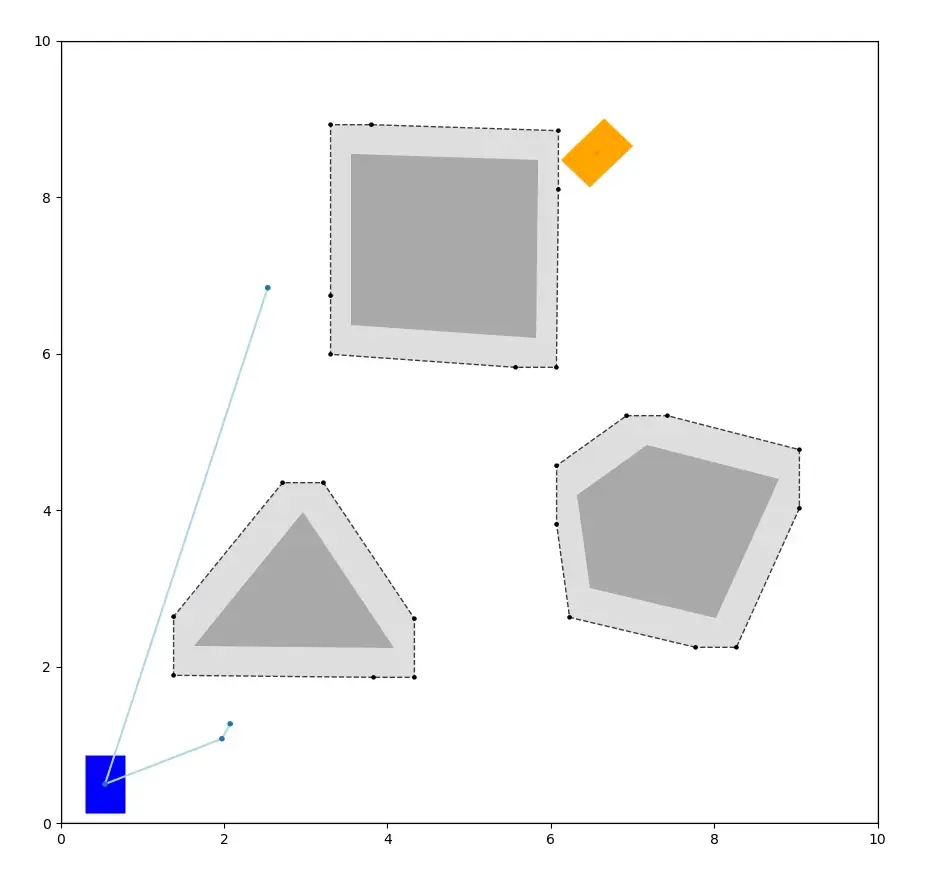
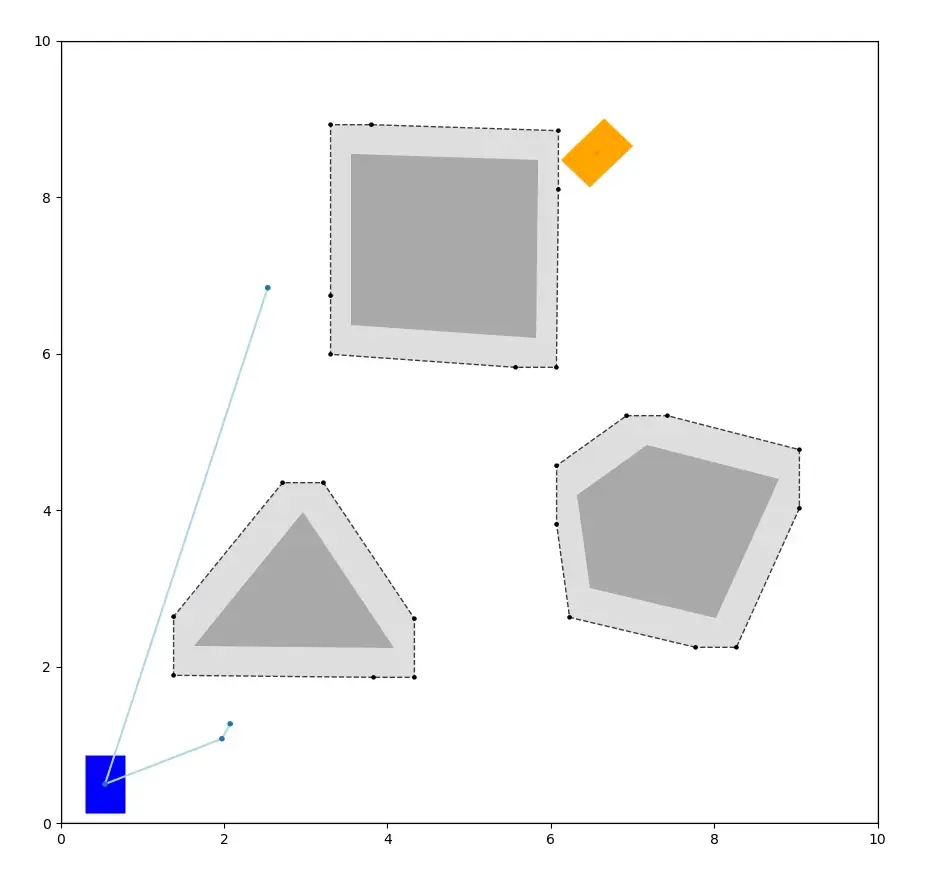

Creative
 

Neurotic
Live coding environment for audio reactive visuals built with p5.js.
PHANTOMa
High performance Rust/WebGPU rendering and realtime audio signal processing engine built for live DJ performances.
 

Nyxt's Abyss
Projection mapped and audio reactive VR nightclub built with PHANTOMa.
 

Shader Playground
Interactive GLSL shader editor with hot reloading and automatic GUI generation.
Nightclub Quake
Play Quake 3 CPMA with your friends over the local network.
Hardware
Bare Metal
Setup guide for automatically provisioned federated bare metal Kubernetes meta-clusters. Powers my personal infrastructure, including this site.
E131.rs
Rust library for sending and receiving E.131 (sACN) lighting control packets.
StageBridge
Rust library for orchestrating software-defined live DJ performances with support for MIDI devices, DMX lights, lasers, networking, and more.
VDJOSC
VirtualDJ plugin for synchronizing audio playback between multiple devices over the network.
Launchpad.rs
Rust library for interacting with Novation Launchpad MIDI controllers.
Software
SignStream
Rutgers: Research application for linguistic annotation and analysis of American Sign Language. Implemented a GStreamer-based embedded media player, and a suite of speech analysis algorithms.
CoverDisp
Desktop utility for fetching and displaying the album artwork of the currently playing song.
 

PolyPlanner
Path planning simulations for a car-like robot in an environment with polygonal obstacles.
Argon OS
Experimental bootloader and kernel written entirely from scratch to learn about operating systems.
Terraform for VyOS
Maintainer of the Terraform (infrastructure as code) provider for the open source VyOS router distribution.